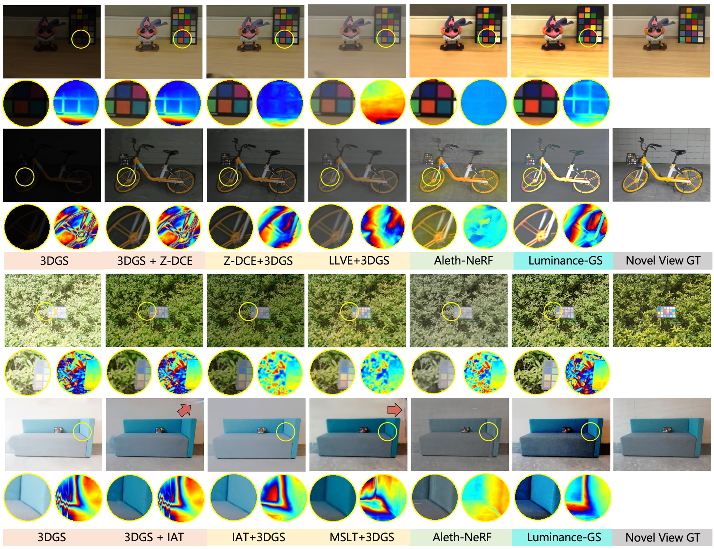
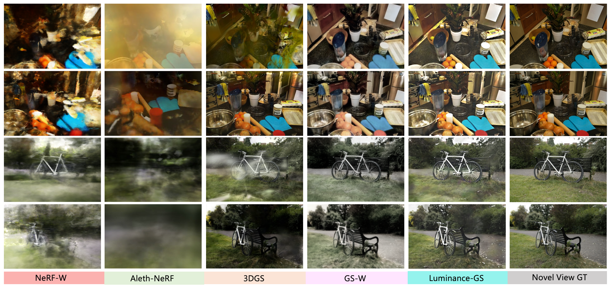

Abstract

Capturing high-quality photographs under diverse real-world lighting conditions is challenging, as both natural lighting (e.g., low-light) and camera exposure settings (e.g., exposure time) significantly impact image quality. This challenge becomes more pronounced in multi-view scenarios, where variations in lighting and image signal processor (ISP) settings across viewpoints introduce photometric inconsistencies. Such lighting degradations and view-dependent variations pose substantial challenges to novel view synthesis (NVS) frameworks based on Neural Radiance Fields (NeRF) and 3D Gaussian Splatting (3DGS). To address this, we introduce Luminance-GS, a novel approach to achieving high-quality novel view synthesis results under diverse challenging lighting conditions using 3DGS. By adopting per-view color matrix mapping and view adaptive curve adjustments, Luminance-GS achieves state-of-the-art (SOTA) results across various lighting conditions—including low-light, overexposure, and varying exposure—while not altering the original 3DGS explicit representation. Compared to previous NeRF- and 3DGS-based baselines, Luminance-GS provides real-time rendering speed with improved reconstruction quality.
Novel view synthesis (NVS) results under different lighting conditions (low-light, over-exposure, varying exposure). Up: 3D Gaussian Splatting. Bottom: Our Luminance-GS.
Overview of Luminance-GS pipeline. Up: Our method jointly optimizes 3D Gaussians with two sets of color attributes 
Results on LOM dataset (AAAI 2024 low-light & over-exposure), with comparision of previous SOTA.

Results on our proposed varying exposure dataset (from Mip-NeRF360 Dataset), with comparision of previous SOTA.
Overview
ci and ciout to render out input images Cin and pseudo-enhanced images Cout. Down: To translate Cin into view-aligned enhanced Cout, we design 3 steps: (1).per-view color matrix mapping, (2).view-adaptive curve adjustment, (3).color matrix mapping back. More details please refer to our paper.
Experimental Results
BibTeX
@inproceedings{cui_luminance_gs,
title = {Luminance-GS: Adapting 3D Gaussian Splatting to Challenging Lighting Conditions with View-Adaptive Curve Adjustment},
author = {Ziteng Cui and Xuangeng Chu and Tatsuya Harada},
booktitle={CVPR},
year={2025}}